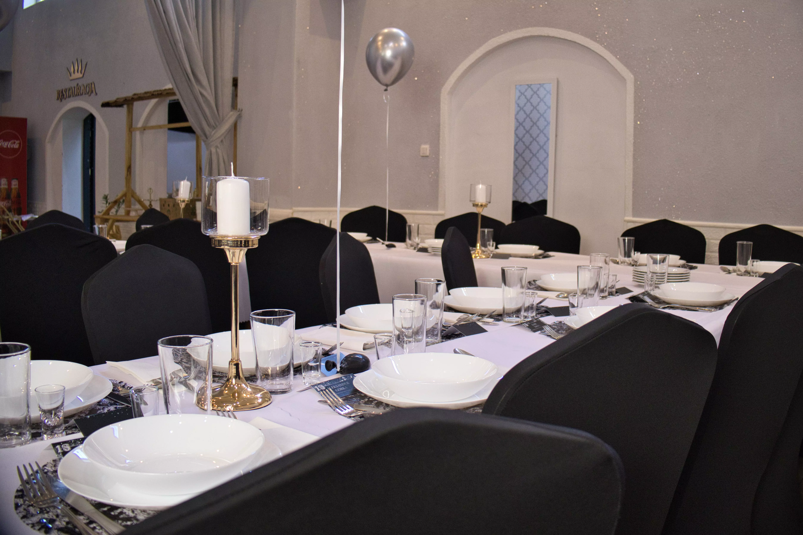

Spokojna sala
Dobieramy przestrzeń do liczby uczestników, tak aby spotkanie pozostało kameralne, wygodne i odpowiednio przygotowane.
Środa Śląska · spokojnie i z szacunkiem
Zapewniamy godne miejsce na spotkanie po pożegnaniu bliskiej osoby. Zajmiemy się salą, ustaleniem menu i sprawną obsługą, aby Państwo mogli skupić się na rodzinie i najbliższych.
Wsparcie w organizacji
Każde przyjęcie ustalamy indywidualnie — od liczby miejsc i układu sali, przez zakres menu, po godzinę rozpoczęcia. Możemy przygotować kameralne spotkanie dla najbliższej rodziny albo większe przyjęcie do 120 osób.
Jeśli termin jest bliski, najlepiej zadzwonić. Jesteśmy dostępni codziennie od 8:00 do 20:00 i od razu sprawdzimy możliwości organizacji przyjęcia.

Co możemy przygotować
Bez zbędnych formalności i gotowych pakietów narzucających zakres usługi. Ustalamy rozwiązanie odpowiednie do sytuacji i potrzeb rodziny.
Dobieramy przestrzeń do liczby uczestników, tak aby spotkanie pozostało kameralne, wygodne i odpowiednio przygotowane.
Zakres posiłków i sposób podania ustalamy podczas rozmowy. Ostateczna wycena zależy od wybranego menu oraz liczby osób.
Dbamy o przygotowanie sali i przebieg przyjęcia, aby odciążyć rodzinę od spraw organizacyjnych w dniu spotkania.
Podana cena jest ceną początkową. Dokładną propozycję przedstawimy po poznaniu liczby gości i oczekiwanego zakresu menu.
Trzy proste kroki
Podaj planowany termin i przybliżoną liczbę uczestników.
Dobierzemy salę, zakres menu i sposób organizacji przyjęcia.
Skorzystaj z formularza rezerwacji przyjęć, aby przekazać wszystkie dane.
Średzka Korona znajduje się przy ul. Wrocławskiej 11 w Środzie Śląskiej. To dogodna lokalizacja dla rodzin ze Środy Śląskiej, Miękini, Lutyni oraz miejscowości położonych w promieniu około 20 km.
Najczęstsze pytania
Oferta zaczyna się od 59 zł za osobę. Końcowa cena zależy od liczby uczestników oraz ustalonego zakresu menu i obsługi.
Organizujemy kameralne spotkania oraz większe przyjęcia do 120 osób. Wielkość sali dobieramy do liczby gości.
Tak. Jesteśmy pod telefonem codziennie od 8:00 do 20:00. Można również przejść do formularza rezerwacji i sprawdzić dostępne terminy przyjęć.
Tak. Zakres menu omawiamy podczas rozmowy, uwzględniając liczbę gości, oczekiwany przebieg spotkania i budżet.
Jesteśmy dostępni codziennie 8:00–20:00
Zadzwoń, aby od razu zapytać o dostępność, albo przejdź do formularza rezerwacji przyjęć. Odpowiemy spokojnie i konkretnie.